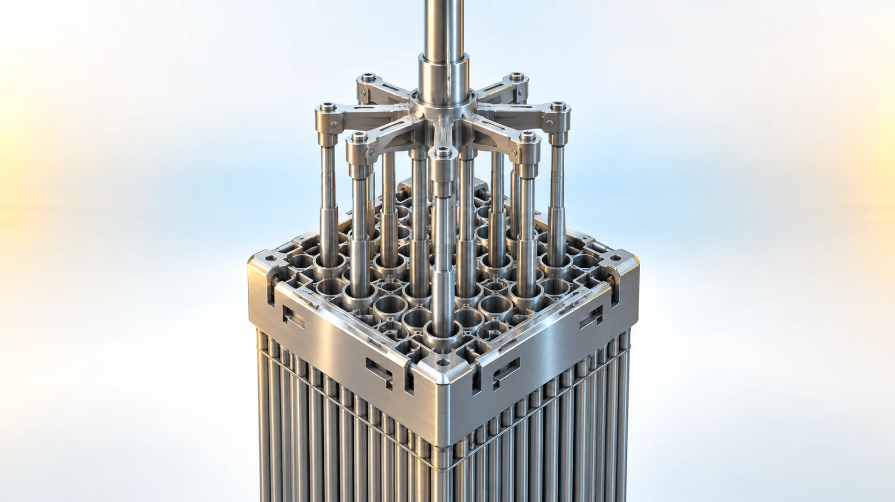
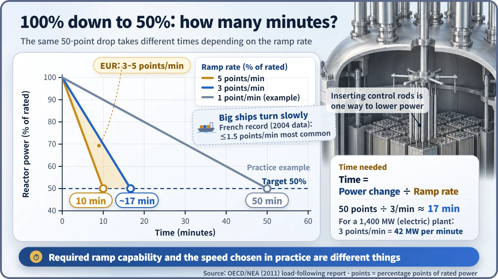
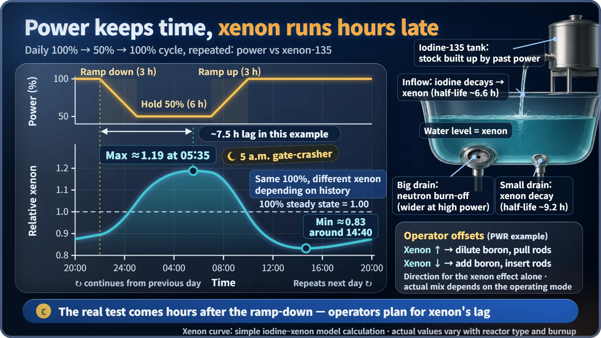

Plant Operation, Control & the Grid · 227
"Please Run at Half Power Tonight" — What Load-Following Operation Means for a Nuclear Plant
Turning a reactor down to 50% and back is not flipping a switch. Operators balance a reactivity ledger and plan for xenon, which peaks hours after the ramp-down.

Load-following operation means deliberately lowering a nuclear plant's output and raising it again to match electricity demand, typically once or twice a day between 100% and around 50% of rated power. It is normal operation within set limits on range and speed, shaped by three conditions: xenon's time lag, fuel swelling and the reduced margin at the end of a fuel cycle. [1]
Imagine a made-up message arriving in a control room: "Starting at 22:00, please lower output to 50% over three hours, then bring it back to 100% starting at 07:00 tomorrow." For a light switch, that's one click. Nuclear plant operators reach for a calculator: how fast to come down, what will happen around five in the morning, and whether the fuel can handle the pace.
You can't keep electricity in a warehouse
Electricity has to be used almost the moment it is made, because storing it on a large scale is hard, while demand swings all day. For a long time nuclear plants held output nearly constant, but in France, where nuclear makes up 70–80% of electricity, nuclear also takes on demand changes. In South Korea, as solar has grown sharply, lowering some plants' output at low-demand times such as spring weekends is becoming more common. [2]
Load following is not frequency control, which automatically moves output by about ±2% of rated power within seconds when grid frequency wobbles. Load following is large, planned operation over hours, moving output by close to half. [1]
How far, and how fast?
The European Utility Requirements (EUR) ask that new plants cycle daily between 50% and 100% of rated power and change output at 3–5% of rated power per minute. The time needed is simple division:
Time needed = size of the power change ÷ rate of change per minute
A 50-point drop at 5% per minute takes 10 minutes; at 3% per minute, about 17 minutes. For a plant with 1,400 MW of electrical output, 3% per minute is 42 MW per minute. Yet French operating records from the early 2000s show gentle ramps of 1.5% per minute or less were the most common: the required capability and the speed actually chosen are different things. [1]

Three handles in the operator's hands
Steady output means the chain reaction is balanced. That balance is tracked in a reactivity ledger whose entries add up to zero when output is steady:
Control rod share + boron share + temperature feedback share + xenon share + … ≈ 0
| Handle (PWR) | How it works | Trade-off |
|---|---|---|
| Control rods | Neutron-absorbing rods moved in and out from the top of the core | Fast, but tilts power toward the bottom of the core; some French plants use weaker "gray rods" to reduce this |
| Boron | Boric acid dissolved in the cooling water; add more or dilute with water | Adjusts the whole core evenly, but slow, and diluted borated water must be processed |
| Temperature feedback | Reactivity falls on its own as coolant heats up | Draw less steam and output tends to follow down by itself |
The 5 a.m. gate-crasher: xenon
The real challenge arrives hours after the ramp-down. Xenon-135, a fission by-product, soaks up neutrons extremely well. Picture a bathtub fed by a tank of iodine-135, which decays into xenon with a half-life of about 6.6 hours, so the inflow reflects past power. The tub has two drains: a big one where neutrons burn xenon off, wider at higher power, and a small one where xenon decays by itself with a half-life of about 9.2 hours. Cut the power and only the big drain narrows at first, so the xenon level climbs, peaking about 7–8 hours later. [1]

In this example, a ramp-down starting at 10 p.m. puts the xenon peak around 5:30 a.m. Operators make up the reactivity xenon takes by diluting boron or withdrawing rods; in the morning, as neutrons burn xenon off quickly, they reverse course by adding boron and the like.
Why the fuel says "slowly, please"
When power rises, fuel pellets heat up and swell more than the cladding, the metal tube around them. Repeated pushing from inside can damage the tube, so the fuel design limits how fast and how far power can be raised. The end of a fuel cycle is tricky too: dissolved boron has nearly run out and rods are already pulled up. In one French mode, the allowed ramp rate fell from 2% to 0.2% per minute after 80% of the cycle, and the EUR asks for load following during only 90% of the cycle. [1]
Key takeaways
- Load following deliberately lowers and raises output to match demand, typically between 100% and about 50% once or twice a day.
- Time needed = size of change ÷ ramp rate: 50 points at 3% per minute takes about 17 minutes.
- Operators balance the reactivity ledger with control rods, boron and temperature feedback.
- Xenon-135 peaks about 7–8 hours after a ramp-down, so operators plan hours ahead.
- Fuel swelling and end-of-cycle margins limit speed and range; within those limits, load following is normal operation.
Load following isn't flipping a switch; it's balancing a ledger while looking hours ahead. The reply to tonight's message: "Can do. We'll have a plan ready for 5 a.m."